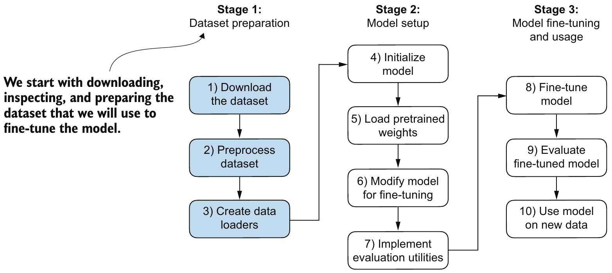
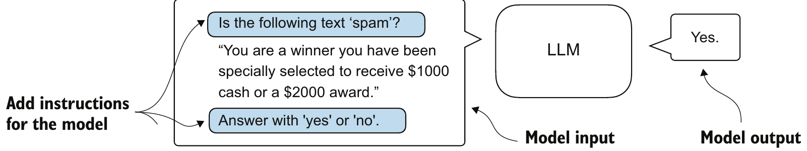
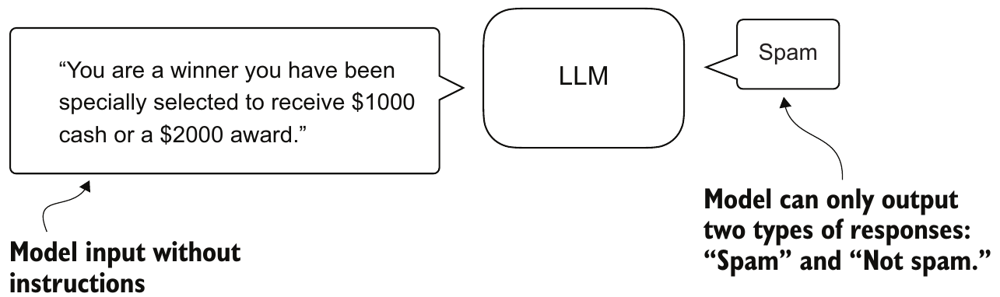
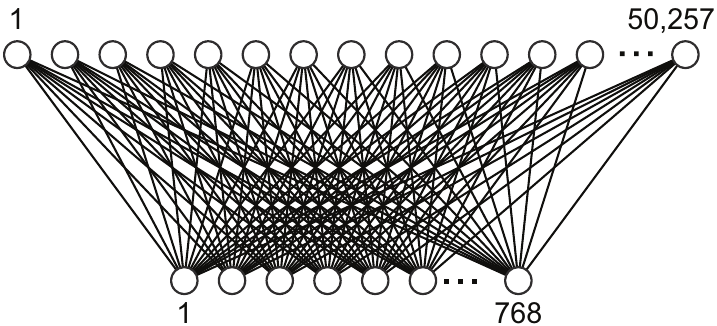
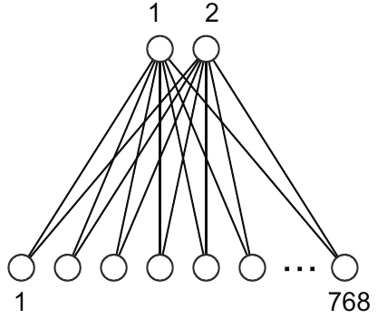
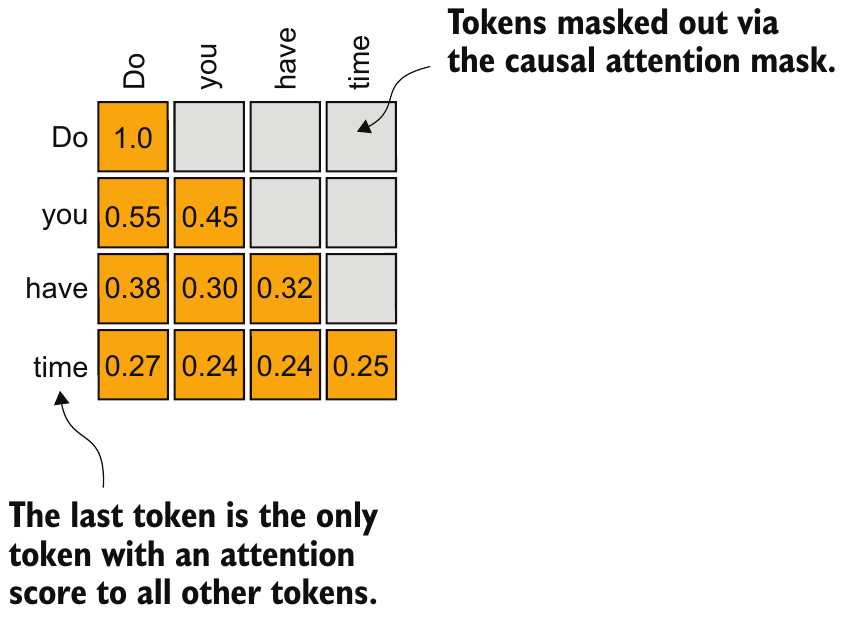

Outline
사전학습한 GPT-2를 문자 메시지의 스팸 여부를 답하는 분류기로 바꾸기 직전까지: 미세조정 유형 선택 → 분류 헤드와 학습 대상 → 마지막 위치 출력 → 정확도·분류 손실 계산
| 선행 지식 | 선행 지식만으로 남는 문제 | 새로 배울 내용과 역할 |
|---|---|---|
| 미세조정: 목적별 데이터로 기반 모델의 기능을 좁히는 단계(4주차) | GPT 출력 = 어휘 50,257개 토큰마다의 다음 토큰 점수, 스팸 여부 같은 정해진 답의 출력 방법 부재 | 분류 미세조정(3~4장): 미리 정한 클래스(범주) 중 하나만 답하게 하는 미세조정, 지시 미세조정(지시문에 따른 응답 토큰 열을 생성하게 하는 미세조정)과 비교 |
| 출력층(7주차), GPT-2 사전학습 파라미터의 활용 전제(10주차) | 어휘 점수 50,257개로는 두 클래스의 점수 비교 불가 | 분류 헤드(5~6장): 출력층을 클래스 점수용 층으로 교체, 학습 대상(미세조정 때 값을 바꿀 파라미터) 선택 |
| causal mask(6주차), 마지막 위치의 다음 토큰 선택(10주차) | 위치마다 클래스 점수가 나오지만 메시지 하나의 답은 1개 | 마지막 위치 출력(7~8장): 출력 shape 읽기와 인덱스 −1 위치를 쓰는 이유 |
| cross_entropy 손실과 argmax 일치율(9주차) | 학습 전 모델의 분류 수준 미확인 | 평가 도구(9~11장): 정확도(맞힌 메시지 비율)와 분류 손실(9주차 cross_entropy 손실을 마지막 위치 점수와 메시지의 정답 클래스로 계산한 값, 미세조정의 학습 목표) |
출발점 = 2장의 준비된 상태(교재 Figure 6.4의 1~5단계: 분류용 DataLoader, 사전학습 파라미터를 대입한 GPT-2), 이 강의 = 6단계(모델 수정) 5~8장, 7단계(평가 도구) 9~11장
문자 메시지 스팸 분류기 강의 예제
공통 예제 = 문자 메시지 1개 → spam(스팸: 원치 않는 광고·사기 문자) 또는 ham(정상 문자) 중 하나를 답하는 분류기, 출발점 = 데이터·모델 준비를 마친 상태(아래 표)
| 데이터 | SMS Spam Collection: 연구자 Almeida·Gómez Hidalgo가 2011년 공개한 영어 휴대폰 문자(SMS)와 ham·spam 표시(불러온 메시지 5,572개) |
|---|---|
| 준비된 데이터 | 학습·검증 데이터(9주차)의 DataLoader: batch = 메시지 8개의 토큰 ID [8, 120] + 레이블 [8](정답 클래스 번호 ham 0·spam 1), 120 = 학습 데이터 최장 메시지의 토큰 수, 학습 쪽만 epoch마다 섞기 |
| 출발 모델 | GPT-2 124M(10주차 gpt2-small)의 사전학습 파라미터(OpenAI가 다음 토큰 예측으로 학습해 공개한 값)를 대입한 GPTModel, 출력층(7주차) = 특징 768개 → 어휘 점수 50,257개, 문맥 길이(최대 입력 토큰 수) 1,024 |
| 추적할 메시지 | A "Ya just telling abt tht incident.." (ham, 실제 10토큰 + 패딩 110개) B "Congratulations U can claim 2 VIP …" (spam, 실제 45토큰 + 패딩 75개, … = 뒷부분 생략) → 7~11장에서 추적 |

교재 Figure 6.4(왼쪽 → 오른쪽): "Stage" = 단계 묶음, 1~5단계(데이터 준비·모델 초기화·사전학습 파라미터 대입) = 준비된 상태, 6단계 "Modify model"(모델 수정)·7단계 "Implement evaluation utilities"(평가 도구) = 이 강의, 8~10단계 = 범위 밖, 파란 상자 = 교재가 강조한 데이터 준비
- 패딩(4주차): 길이 120으로 맞추려고 실제 토큰 뒤를 <|endoftext|>(ID 50256)로 채우기
분류 미세조정과 지시 미세조정
같은 스팸 문자를 두 방식으로 미세조정한 모델에 넣었을 때의 입력·출력 비교: 정해진 클래스 하나(분류) vs 지시에 따른 응답 토큰 열(지시)

교재 Figure 6.2 위쪽: 지시 미세조정, 파란 상자 = 메시지 앞뒤에 붙인 지시문("이 글이 스팸인가?", "yes 또는 no로 답하라"), 출력 "Yes."

교재 Figure 6.3 위쪽: 분류 미세조정, 메시지만 입력, 출력은 "Spam"·"Not spam"(= 이 강의의 ham) 두 가지 중 하나
| 구분 | 분류 미세조정(classification fine-tuning) | 지시 미세조정(instruction fine-tuning) |
|---|---|---|
| 입력 | 메시지만 | 지시문 + 메시지 |
| 출력 | 미리 정한 클래스 중 하나(spam·ham) | 응답 토큰 열(예: "Yes.") |
| 할 수 있는 일 | 학습한 클래스의 판정만 | 지시마다 다른 작업(예: 번역) |
| 필요한 데이터·계산(일반적 경향) | 비교적 적음 | 여러 작업을 다룰 만큼 많음 |
| 출력층 | 클래스 수만큼의 점수를 내는 새 층 | 어휘 50,257개 점수의 출력층 유지 |
지시문으로 요청한 스팸 판정의 결과
문제 확인: 3장 Figure 6.2의 "Yes." = 지시 미세조정을 마친 모델의 응답, 이 장 = 2장의 출발 모델(미세조정 전, 사전학습만 한 GPT-2)에 '스팸인가? yes 또는 no로 답하라'는 지시문과 메시지를 넣으면 yes·no를 답하는가
text_2 = ("Is the following text 'spam'? Answer with 'yes' or 'no':"
" 'You are a winner you have been specially"
" selected to receive $1000 cash or a $2000 award.'")
idx = torch.tensor([tokenizer.encode(text_2)])
out = generate_text_simple(model, idx, 23, 1024)
print(idx.shape, tokenizer.decode(out[0, idx.shape[1]:].tolist()))torch.Size([1, 38])
The following text 'spam'? Answer with 'yes' or 'no': 'You are a winner입력과 출력 읽기
text_2= 지시문 + 상금 당첨을 내세운 사기 문자, 38토큰23·1024: 생성할 토큰 수·GPT-2의 문맥 길이out[0, idx.shape[1]:]: 입력 38토큰 뒤에 생성한 23토큰만- 결과: yes·no 대신 입력(지시문 + 문자 앞부분)의 되풀이
원인과 해결 방향
- 사전학습의 목표 = 다음 토큰 예측, 지시를 따르는 학습 없음
- 해결(3장): 지시 미세조정 또는 출력층을 클래스 점수로 바꾸는 분류 미세조정
- 이 강의의 선택 = 분류 미세조정
출력층을 두 클래스 점수의 분류 헤드로 교체
4장 문제의 해결: 분류 헤드(classification head) = 출력층 out_head 자리에 새로 붙여 위치(토큰 자리)마다 특징 768개(최종 LayerNorm까지 거친 숫자, 7주차)를 클래스 수(2)만큼의 점수(logits)로 바꾸는 선형층, 순서 = 기존 파라미터 전체 동결 → 출력층 교체


교재 Figure 6.9 오른쪽 두 그림: 왼쪽 = 원래 출력층(아래 원 768개 특징 → 위 원 50,257개 어휘 점수), 오른쪽 = 교체한 층(768개 → 2개), 선 = 곱해지는 파라미터, 위 원 1·2 = 코드의 클래스 번호 0(ham)·1(spam)
torch.nn.Linear(in_features, out_features): 특징 in개에 파라미터를 곱해 더하고 출력마다 bias(곱셈과 별도로 더하는 값, 7주차 출력층의 bias) 1개를 더해 점수 out개를 내는 선형층, 기본값 bias 있음in_features=768= 특징 수, 원래out_head= bias 없이 만든 층(bias=False)- 출력 2개 = 클래스 수: 클래스가 3개면 출력 3개로 같은 코드 사용
print(model.out_head)
for param in model.parameters():
param.requires_grad = False
torch.manual_seed(123)
model.out_head = torch.nn.Linear(in_features=768, out_features=2)
print(model.out_head)
print(sum(p.numel() for p in model.parameters() if p.requires_grad))Linear(in_features=768, out_features=50257, bias=False)
Linear(in_features=768, out_features=2, bias=True)
1538requires_grad = False: 기울기를 계산하지 않아 optimizer가 바꾸지 않는 고정 파라미터로 만들기 = 동결(freeze)- 새
out_head: 동결 뒤에 만든 층이라requires_grad = True(기본값), 학습 가능 768 × 2 + bias 2 = 1,538개(원래out_head의 크기 768 × 50,257 = 38,597,376개)
학습 대상 파라미터: 마지막 block·최종 LayerNorm·분류 헤드
5장 상태 = 기존 파라미터 전체 동결 + 동결 뒤 새로 만든 분류 헤드만 학습 가능(1,538개) → 출력에 가까운 마지막 Transformer block과 최종 LayerNorm을 다시 학습 대상으로 풀어 미세조정 때 바뀔 범위 확정(전체를 먼저 동결한 뒤 풀 층만 고르는 순서 = 학습 대상이 명시한 층으로만 한정)
for param in model.trf_blocks[-1].parameters():
param.requires_grad = True
for param in model.final_norm.parameters():
param.requires_grad = True
n_train = sum(p.numel() for p in model.parameters() if p.requires_grad)
n_all = sum(p.numel() for p in model.parameters())
print(n_train, n_all, round(n_train / n_all, 3))7090946 124441346 0.057trf_blocks[-1]: block 12개 목록의 마지막(12번째) block,final_norm: 마지막 block 뒤의 최종 LayerNorm(7주차)out_head: 5장에서 동결 뒤 새로 만든 층이라 기본값requires_grad = True로 이미 학습 대상, 합계 7,087,872 + 1,536 + 1,538 = 7,090,946개 = 전체 124,441,346개의 5.7%- 선택 근거: 아래층 = 여러 작업에 공통인 언어 특징, 출력에 가까운 층 = 작업별 특징이라는 경험적 관찰 → 위쪽 일부만 학습해 계산량 감소(층 범위별 성능 비교는 이 강의에서 미실행)
out_head(768 → 2)학습 1,538final_norm학습 1,536trf_blocks[-1]학습 7,087,872모델 구조(아래 → 위 = 입력 → 출력), 진한 테두리 = 학습 대상, 회색 = 동결, 숫자 = 파라미터 수
분류 헤드 모델의 출력 shape
작성자가 분류 헤드 교체 직후·미세조정 전(5·6장 상태)에 출력 형태를 확인: inputs = 2장 메시지 A·B의 토큰 ID 120개씩을 쌓은 batch [2, 120](0행 = A, 1행 = B)을 넣었을 때 출력 [2, 120, 2]의 축별 의미와 분류에 쓰는 마지막 위치의 점수 [2, 2]
with torch.no_grad():
outputs = model(inputs)
print(inputs.shape, outputs.shape)
print(outputs[:, -1, :])torch.Size([2, 120]) torch.Size([2, 120, 2])
tensor([[-2.3507, 2.6437],
[-2.3161, 2.7413]])outputs[:, -1, :]: 모든 메시지 · 마지막(120번째) 위치 · 두 점수 → [2, 2], 출력의 한 행 = 메시지 하나의 [ham 점수, spam 점수]
| 축 | 길이 | 뜻 |
|---|---|---|
| 0 | 2 | 메시지(A, B) |
| 1 | 120 | 위치(실제 토큰 + 패딩) |
| 2 | 2 | 클래스 점수(0번 ham, 1번 spam) |
- 교체 전 출력층이면 [2, 120, 50257]: 마지막 축만 어휘 50,257 → 클래스 2로 변경
- 점수 = logits(합이 1일 필요 없는 비교 점수, 7주차), 값 = 학습 전 무작위 초기값 분류 헤드의 출력(분류 판정 아님)
마지막 위치 출력만 쓰는 이유: causal mask
causal mask(6주차): 각 위치는 자기와 앞 토큰만 참조 → 길이와 상관없이 늘 모든 토큰을 참조하는 위치 = 마지막 위치(인덱스 −1)

교재 Figure 6.12: 행 = 참조하는 위치, 열 = 참조되는 토큰, 주황 칸 = attention 비율, 회색 = 가린 미래 위치, 마지막 행 "time"만 네 토큰 전부 참조
inputs= 7장의 A·B batch [2, 120](패딩 포함),outputs= 그 출력 [2, 120, 2], 0행 = A(실제 토큰 10개), 1행 = B(45개)
a = inputs[:1, :10]
with torch.no_grad():
print(model(a)[0, -1])
print(outputs[0, 9], outputs[0, 0])tensor([-4.2615, 5.1466])
tensor([-4.2616, 5.1466]) tensor([-1.7682, 1.1406])| 메시지 A의 위치 | 참조하는 토큰 | 출력 점수 [ham, spam] |
|---|---|---|
| 1번 | 첫 토큰 "Y" 1개 | [−1.7682, 1.1406] |
| 10번(실제 끝) | 실제 토큰 10개 | [−4.2616, 5.1466] = 패딩 없이 계산한 값 |
| 120번(패딩, −1) | 실제 10개 + 패딩 110개 | [−2.3507, 2.6437](7장) |
a = inputs[:1, :10]: A의 실제 토큰 10개만, 10번 값 일치(넷째 자리 = 길이 차이로 생긴 미세 계산 오차) → 뒤 패딩은 앞 위치에 영향 없음- 선택 이유: 메시지별 실제 끝 위치(A 10번, B 45번) = 길이를 따로 기록해 꺼내야 함, 고정 앞 위치(10번) = B의 앞 10토큰만 참조 → 모든 메시지에 같은 −1(구현 선택)
- 한계: −1 위치는 패딩도 참조해 10번과 점수가 다름 = 학습 전에는 패딩 개수에 따라 점수가 달라짐, 대응: 미세조정 손실도 같은 −1 위치에서 계산 → 이 위치의 점수가 맞도록 파라미터 조정
마지막 위치 점수에서 예측 클래스로
단계 전환: 모델 수정(2장 Figure 6.4의 6단계) 끝 → 평가 도구(7단계) 시작, 첫 질문 = 마지막 위치의 두 점수(7장 outputs[:, -1, :] = 이 장의 logits)에서 예측 클래스를 어떻게 정하고 A·B 예측은 맞는가
logits = outputs[:, -1, :]
print(torch.softmax(logits, dim=-1))
print(torch.argmax(logits, dim=-1))tensor([[0.0067, 0.9933],
[0.0063, 0.9937]])
tensor([1, 1])softmax: 두 점수 → 합 1인 확률,argmax: 큰 값의 위치 번호 = 예측 클래스(7주차의 다음 토큰 선택과 같은 규칙, 후보만 2개)- softmax 생략 가능: 점수의 크기 순서 유지 →
argmax(logits)=argmax(확률) logits0행 = A "Ya just telling abt tht incident.."(ham), 1행 = B "Congratulations U can claim 2 VIP …"(spam), 2장의 두 메시지
| 메시지 | logits [ham, spam] | softmax 확률 | 예측(argmax) | 정답 레이블 | 판정 |
|---|---|---|---|---|---|
| A | [−2.3507, 2.6437] | [0.0067, 0.9933] | 1(spam) | 0(ham) | 틀림 |
| B | [−2.3161, 2.7413] | [0.0063, 0.9937] | 1(spam) | 1(spam) | 맞음 |
분류 정확도 계산 함수
정확도 = 맞힌 메시지 수 ÷ 판정한 메시지 수, calc_accuracy_loader = DataLoader의 앞 num_batches개 batch로 정확도를 계산하는 함수, 이 장 = 2장의 학습·검증 DataLoader마다 앞 10 batch(80개)의 학습 전 결과
def calc_accuracy_loader(data_loader, model, device, num_batches=None):
…
for i, (input_batch, target_batch) in enumerate(data_loader):
if i < num_batches:
…
with torch.no_grad():
logits = model(input_batch)[:, -1, :]
predicted_labels = torch.argmax(logits, dim=-1)
num_examples += predicted_labels.shape[0]
correct_predictions += (predicted_labels == target_batch).sum().item()
…
return correct_predictions / num_examples
torch.manual_seed(123)
train_accuracy = calc_accuracy_loader(train_loader, model, device, num_batches=10)Training accuracy: 46.25%
Validation accuracy: 45.00%- 발췌(… = 생략한 줄),
enumerate: batch 번호 i와 batch를 함께 꺼냄 → i <num_batches인 batch만 계산 predicted_labels.shape[0]= batch의 메시지 수,(predicted_labels == target_batch).sum().item()= 예측과 레이블이 같은 칸(True)의 개수(Python 정수)train_loader·val_loader= 2장의 학습·검증 DataLoader, 검증도val_loader로 같은 호출, 출력의 Training·Validation = 학습·검증 데이터
마지막 위치 logits의 분류 손실
정확도는 예측이 바뀔 때만 변해 기울기 계산에 부적합(9주차 argmax 일치율과 같은 성질) → 학습 목표 = cross_entropy 분류 손실, 입력: 9주차 모든 위치 logits [N, V]·다음 토큰 정답 → 마지막 위치 logits [N, 2]·메시지 레이블 [N]
def calc_loss_batch(input_batch, target_batch, model, device):
…
logits = model(input_batch)[:, -1, :]
loss = torch.nn.functional.cross_entropy(logits, target_batch)
return loss
labels = torch.tensor([0, 1])
print(torch.nn.functional.cross_entropy(logits, labels, reduction="none"))
print(torch.nn.functional.cross_entropy(logits, labels))tensor([5.0011, 0.0063])
tensor(2.5037)logits: 9장의 A·B 마지막 위치 점수(shape [2, 2], A = [−2.3507, 2.6437], B = [−2.3161, 2.7413]),labels= A·B의 정답 [0, 1],reduction="none": 평균 대신 메시지별 손실 반환- cross_entropy 안에서 softmax 적용 → 확률이 아닌 logits를 그대로 넣음(확률을 넣으면 softmax 중복, 9주차), 입력 형태 = logits [N, 2] + 레이블 [N](9주차 [N, V]에서 V = 2)
\[L=-\frac{1}{N}\sum_{i=1}^{N}\log p_i\]
- 교차엔트로피 손실(9주차와 같은 식), \(N\) = 메시지 수, \(p_i\) = i번째 메시지의 logits에 softmax를 적용한 뒤 정답 레이블 번호 열에서 고른 확률, log = 자연로그
| 메시지(정답) | softmax [ham, spam] | \(p_i\) | \(-\log p_i\) |
|---|---|---|---|
| A(0) | [0.0067, 0.9933] | 0.0067 | 5.0011 |
| B(1) | [0.0063, 0.9937] | 0.9937 | 0.0063 |
| 평균 | N = 2 | 2.5037 |
Summary
분류 미세조정 준비의 흐름: 유형 선택 → 분류 헤드·학습 대상 → 마지막 위치 출력 → 정확도·분류 손실 계산
| 개념 | 확인한 역할과 구분 |
|---|---|
| 분류 미세조정 | 미리 정한 클래스 중 하나를 답하는 미세조정(분류 헤드 사용), 지시 미세조정 = 지시에 따른 응답 토큰 열 생성 |
| 사전학습 모델의 지시 판정 | 지시문 + 메시지 입력에 yes·no 대신 입력 되풀이, 원인 = 다음 토큰 예측만 학습 |
| 분류 헤드 | 전체 동결 뒤 출력층(특징 768개 → 어휘 점수 50,257개)을 특징 768개 → 클래스 점수 2개의 층으로 교체, 학습 가능 파라미터 1,538개 |
| 학습 대상 | 마지막 block·최종 LayerNorm을 다시 풀어 분류 헤드와 함께 학습할 파라미터 7,090,946개 = 전체 파라미터 124,441,346개의 5.7% |
| 마지막 위치 | 출력 [메시지 2, 위치 120, 클래스 점수 2] 중 위치 축의 인덱스 −1: causal mask 아래에서 길이와 상관없이 늘 메시지의 모든 토큰을 참조하는 공통 위치(패딩 위치여도 해당) |
| 정확도·분류 손실 | 정확도 = argmax 예측의 맞힌 비율, 학습 전 학습 46.25%·검증 45.00%, 분류 손실 = 마지막 위치 cross_entropy(틀린 메시지 A 5.0011·맞힌 B 0.0063, 평균 2.5037) |